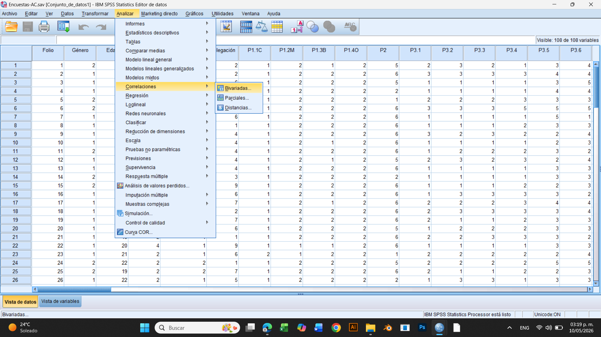
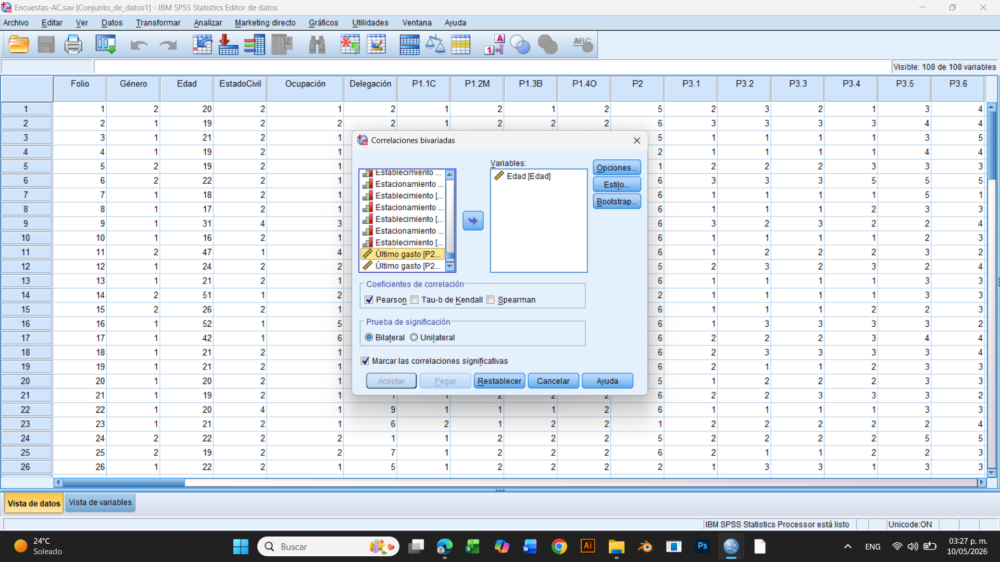
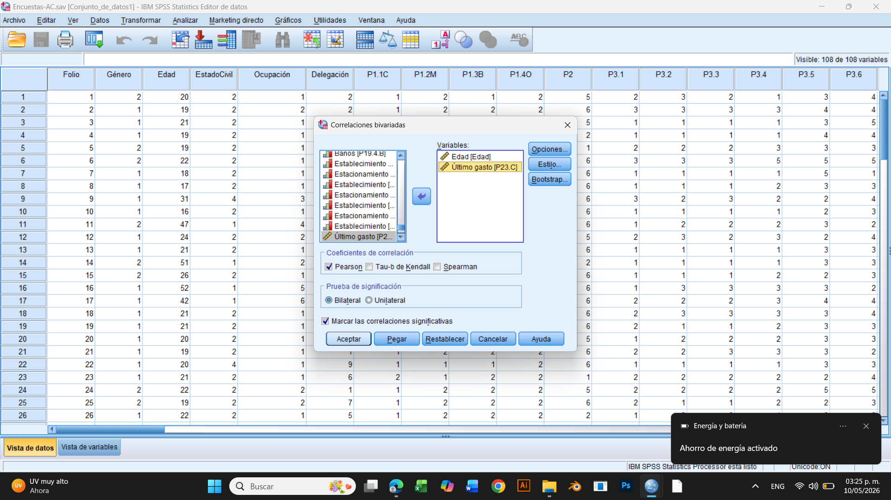
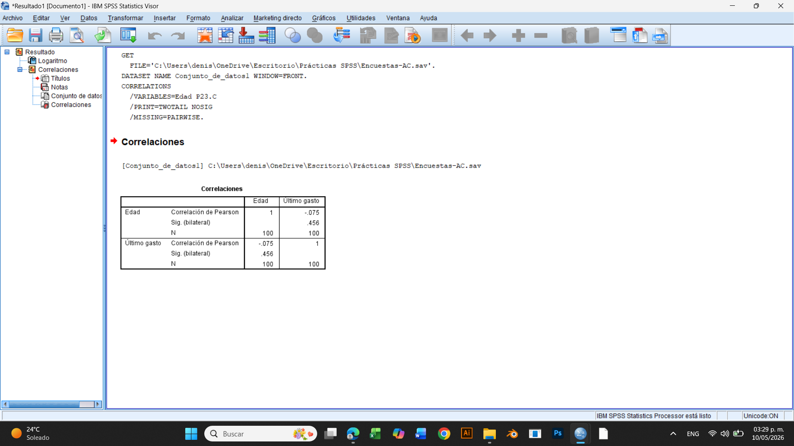
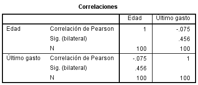

El análisis de correlación se utiliza para identificar la relación entre dos variables numéricas y determinar si los cambios en una variable se relacionan con cambios en otra. Algunos ejemplos de variables que pueden correlacionarse son:
● Edad y último gasto
● Edad y frecuencia de consumo
● Último gasto y frecuencia de compra La correlación puede ser:
● Positiva: ambas variables aumentan al mismo tiempo.
● Negativa: mientras una variable aumenta, la otra disminuye.
● Nula: no existe una relación clara entre las variables. Esto facilita la interpretación de los datos dentro de una investigación.
La correlación bivariada permite analizar dos variables mediante el coeficiente de Pearson. El coeficiente de Pearson es una medida estadística que indica la intensidad y dirección de la relación entre variables numéricas. Sus valores van de -1 a 1.
● Valores cercanos a 1 representan una relación positiva.
● Valores cercanos a -1 representan una relación negativa.
● Valores cercanos a 0 indican ausencia de relación.
1. Abrir la base de datos en SPSS.
2. En la barra superior hacer clic en: Analizar.
3. Seleccionar: Correlacionar.
4. Dar clic en: Bivariadas.

Aparecerá la ventana Correlaciones bivariadas.
5. Buscar las variables que se desean analizar. Ejemplo:
● Edad
● Último gasto
6. Seleccionar las variables y enviarlas al cuadro derecho utilizando la flecha.
7. Verificar que esté seleccionada la opción: Pearson.
8. Verificar que también esté marcada la opción: Bilateral.
9. Dar clic en: Aceptar.


10. SPSS generará una tabla con los resultados de la correlación.
El coeficiente de correlación permite identificar si existe relación entre dos variables numéricas. Si el resultado es positivo, como 0.82, significa que ambas variables aumentan juntas. Por ejemplo, a mayor cantidad de horas de estudio, mayor calificación. Si el resultado es negativo, como -0.76, significa que mientras una variable aumenta, la otra disminuye. Por ejemplo, al aumentar el precio de un producto, las compras pueden disminuir. Cuando el resultado es cercano a 0, como 0.05 o -0.08, significa que no existe una relación clara entre las variables. Por ejemplo, el color favorito de una persona no influye en cuánto dinero gasta en comida. Mientras más cercano esté el resultado a 1 o -1, más fuerte será la relación entre las variables.

En este caso, la correlación entre Edad y Último gasto fue de -0.075. Este resultado indica una relación negativa muy débil, ya que el valor se encuentra muy cercano a 0. Por lo tanto, se interpreta que no existe una relación significativa entre la edad y el último gasto. Esto significa que la edad de los participantes no influye directamente en la cantidad de dinero gastada.
